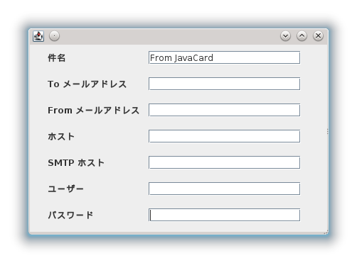

21. 環境設定・ファイルメニュー メール送信設定

表示タブを選択している時に大きなテキストエリアを右クリックすると
「メール送信」機能が使えます。
メモを印刷せずに携帯やスマホなどで持ち歩きたい時に便利です。
この機能を使用するためには、PCがインターネットに接続
されている必要があります。
また、以下の項目をメール送信画面で設定しておく必要があります。
件名：メールの件名を設定しておきます。
Toメールアドレス：送信先アドレスを入力します。
Fromメールアドレス：送信元アドレスを入力します。
ホスト：通常、SMTPサーバを入れておけば良いかと思います。
SMTPホスト：SMTPサーバのアドレスを入力します。
ユーザー：メールのユーザー名を入力します。
パスワード：SMTPサーバにアクセスする際の認証用です。